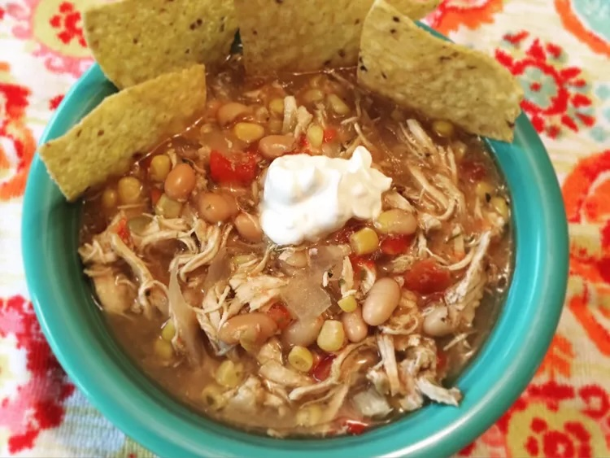

Home
Crock-Pot Chicken Chili

Description
This slow cooker chicken chili is very flavorful. My family love it when the weather gets cold because they know this cozy chili will be on the menu! Serve with tortilla chips, sliced avocado, and shredded cheese.
Ingredients
- 1 (16 ounce) jar green salsa (salsa verde)
- 1 (16 ounce) can diced tomatoes with green chile peppers
- 2 (15 ounce) cans white beans, drained
- 1 (14.5 ounce) can chicken broth
- 1 (14 ounce) can corn, drained
- 1 onion, chopped
- ½ teaspoon dried oregano
- ¼ teaspoon ground cumin
- salt and ground black pepper to taste
- 3 skinless, boneless chicken breasts
Steps
- Mix green salsa, diced tomatoes with green chile peppers, white beans, chicken broth, corn, onion, oregano, cumin, salt, and black pepper together in a slow cooker. Lay chicken breasts atop the mixture.
- Cook on Low until the chicken shreds easily with 2 forks, 6 to 8 hours.
- Remove chicken to a cutting board and shred completely; return to chili in slow cooker and stir.